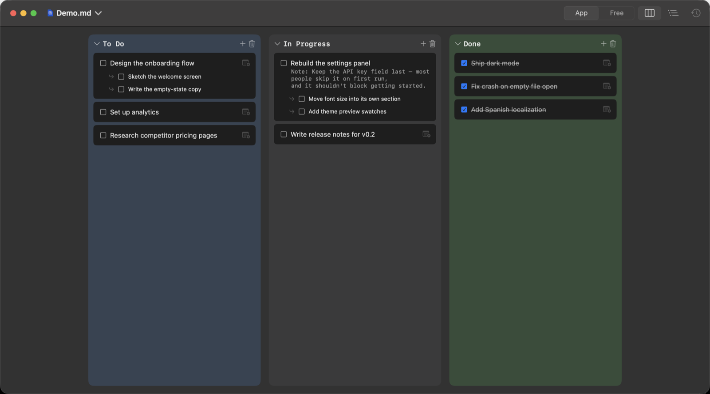
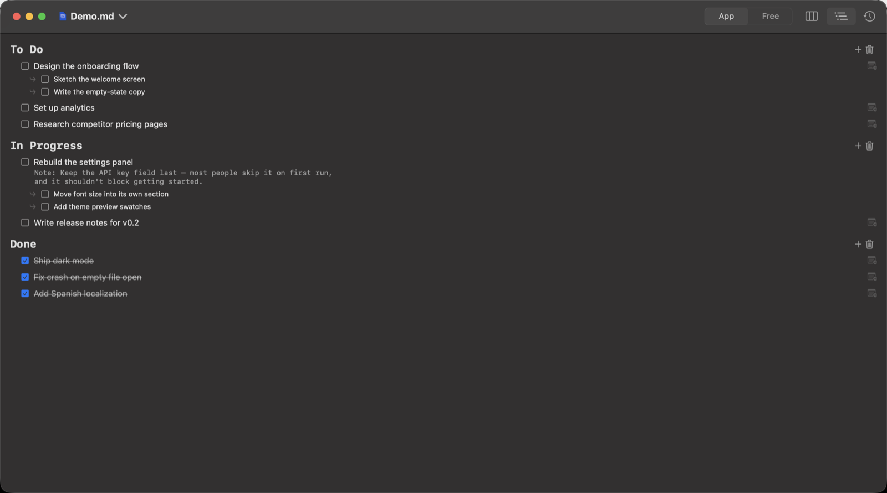
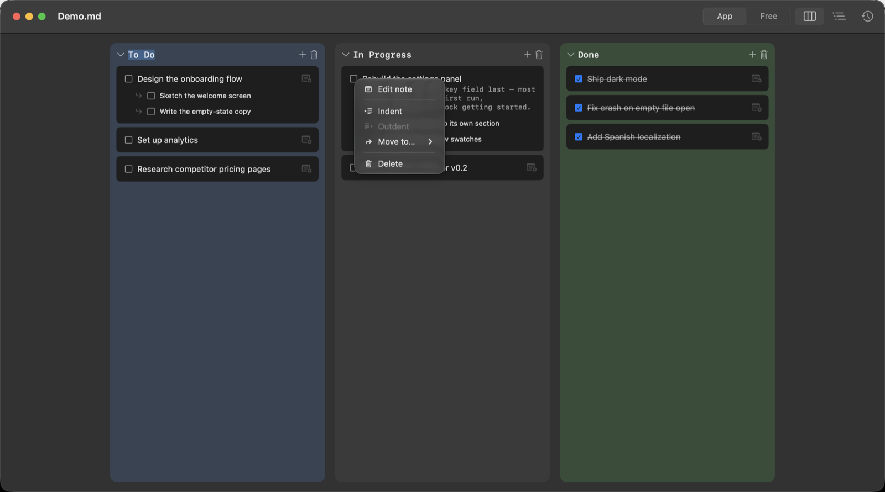
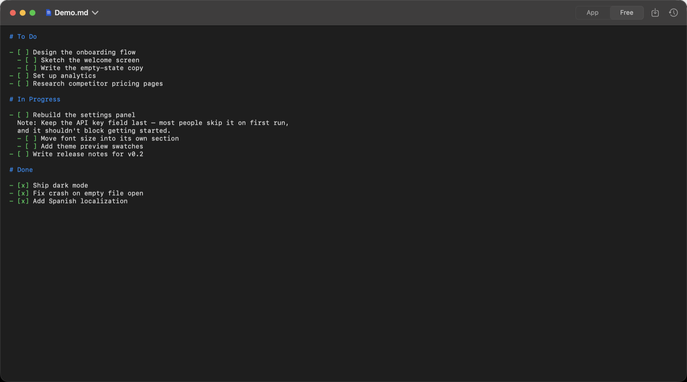

Kanban board. Outline view. Or open the raw Markdown and type. Listo keeps all three in sync — no database, no account, no lock‑in. Just a .md file, wherever you keep it.

Switch views without switching files. Every checkbox, subtask and note is the same underlying Markdown — Listo just renders it differently depending on how you want to work right now.
Sections become columns. Drag a card, check it off, collapse a column you're not looking at. Each heading in the file — # To Do, # In Progress — is a column here, nothing more configured.
The same sections and tasks, laid out as one scrollable document with real typographic hierarchy — closer to how the file actually reads. Good for reviewing everything at once, or on a smaller window.

Select a row, then ⇥ / ⇧⇥ to indent or outdent, arrow keys to move, right‑click for the rest — rename, move to another column, edit its note, delete. Nothing here requires reaching for the mouse.

Every list Listo shows you is a plain .md file on disk — the same one you could open in TextEdit, sync with iCloud or Dropbox, or edit from any other machine. Nothing about it is Listo‑only.

Prefer to type directly? Free Mode gives you the raw text with syntax highlighting — no watcher fighting your edits, no auto‑formatting while you type. Listo only re‑reads the file when you save, so pasting or typing fast never gets reverted out from under you.
A task can carry one note and a set of subtasks. Subtasks stay simple — no infinite nesting to get lost in.
Listo opens and saves ordinary files. Put them in iCloud Drive, a git repo, or nowhere special — it doesn't care.
Edit Free Mode text in a way that's genuinely ambiguous, and Listo can ask an LLM to reconcile it — using your own API key. Skip Settings entirely and it just logs the change as unresolved.
A real SwiftUI app — window tabs, Open Recent, ⌘+/⌘− for font size, light and dark mode, in English or Spanish.
Listo ships as a signed, ad‑hoc build distributed through a Homebrew cask — no App Store, no notarization fee passed on to you.